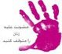
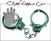
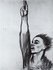

مقالههاى اين بخش
- 28 آذر 1389
نیره توحیدی
- 20 آذر 1389

ترجمه : محبوبه حسین زاده
- 20 آذر 1389

ترجمه : نیکزاد زنگنه
- 17 آذر 1389

پروین ذبیحی
- 13 آذر 1389

با افزایش خشونت، زنان افغان از دورنمای معامله بین رئیس جمهور کرزای و طالبان وحشت زده هستند
ترجمه : محبوبه حسین زاده
- 9 آذر 1389
گزارشی از برگزاری نمایشگاه روایتهای زنان درباره خشونت
- 4 آذر 1389

ناهید میرحاج
- 3 آذر 1389
ترجمه : محبوبه حسین زاده
- 30 آبان 1389

- 15 آبان 1389
ترجمه : لیلا اسدی
- 8 آبان 1389
مطالعهی موردی كمپین یك میلیون امضا*
- 28 مهر 1389

ترجمه : لیلا اسدی
- 13 مهر 1389
زهره اسدپور
- 6 مهر 1389
- 2 مهر 1389
مونا محمدزاده
- 28 شهریور 1389
نیکزاد زنگنه
- 25 شهریور 1389
- 20 شهریور 1389
زینب پیغمبرزاده
- 20 شهریور 1389
رها عسگری زاده
- 20 شهریور 1389
کاوه قاسمی کرمانشاهی
- 20 شهریور 1389
صبرا رضایی
- 20 شهریور 1389
صبرا رضایی
- 13 شهریور 1389
- 13 شهریور 1389
خدیجه مقدم
- 13 شهریور 1389
مونا محمدزاده
- 13 شهریور 1389

منیژه گازرانی
- 9 شهریور 1389
تلنگرهایی بر خواب آلوده های سیاست ورزی
اکثریت قاطع پاسخگویان مطالبات برابری طلبانه زنان را بر حق دانسته و موافقت خود را با آن اعلام کرده اند
- 5 شهریور 1389
فیروزه مهاجر
- 5 شهریور 1389
نیلوفر انسان
- 5 شهریور 1389
| | | | 120 | | | | | ... |